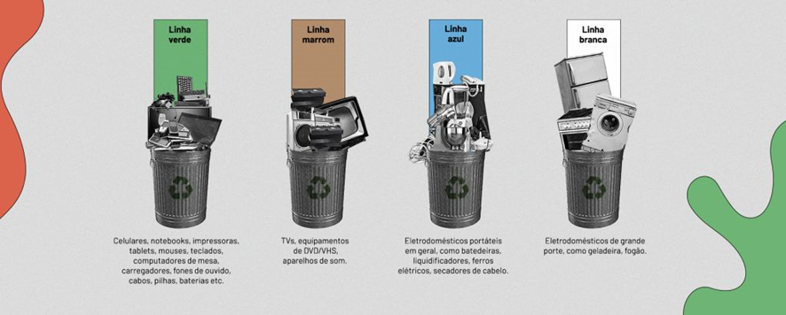

Tipos de lixo eletrônico
Para que a separação seja feita corretamente, o lixo eletrônico é classificado em quatro categorias, identificadas por cores:
>
Para que a separação seja feita corretamente, o lixo eletrônico é classificado em quatro categorias, identificadas por cores: